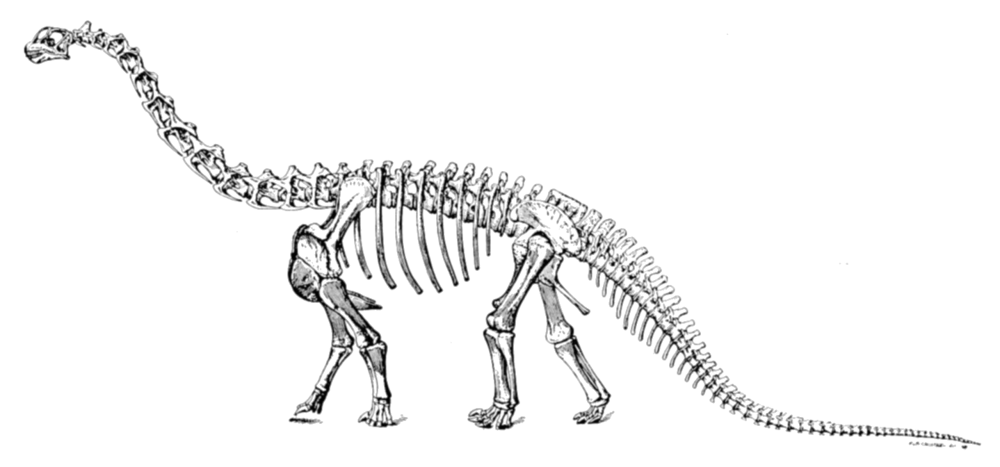

Histoire Locale de SOUBISE de 1900 à 2000
Soubise est une commune de Charente-Maritime très liée à l'économie de Rochefort dont elle est seulement séparée géographiquement par la Charente et proche du bassin ostréicole de Marennes-Oléron.
Soubise disposait au siècle précédent d'un bac pour accéder à Rochefort où l'arsenal employait beaucoup d'ouvriers.
Le transbordeur inauguré en 1900, a facilité la traversée de la Charente, surtout pour les transports lourds grâce à son accès de plain-pied. Les charrettes de pierres ou de farine, tirées par trois ou quatre chevaux, mais dont un seul était solidaire de la charge en descente, avaient beaucoup de difficultés à gravir ou à descendre les rampes d'accès au bac.
Avant la mise en service du transbordeur, le bac était probablement le principal employeur local, compte tenu de la difficulté des manœuvres et du trafic qui commençait tôt le matin jusqu'au soir très tard. Avant d'être automoteur, le bac consistait en une barge transportant les personnes et les marchandises tractée par un remorqueur à vapeur qui prenait de la vitesse pour la lancer vers l'embarcadère opposé et permettre le débarquement. Le courant sur la Charente et la marée montante ou descendante compliquaient la manœuvre. Il m'a été raconté que, quand la barge n'avait pas assez d'élan, elle se trouvait emportée par le courant et le remorqueur à vapeur ne pouvait la rattraper que plusieurs kilomètres en amont ou en aval pour l'accrocher et la ramener. Cet équipement a été remplacé par un bac automoteur entre les deux guerres.
Louis Brocas né en 1925, m'a raconté que c'est son père qui est allé chercher ce remorqueur en Mer du Nord en longeant les côtes pour revenir.
En 1900, l'activité agricole était encore prépondérante malgré la crise amenée par le phylloxéra sur la vigne qui avait supprimé beaucoup de travail puisque l'on peut estimer que le vignoble occupait autrefois un homme par hectare. De 168.000 ha en 1870, le vignoble de la Charente-Inférieure est tombé à 37.201 en 1891.
Le personnel de maison était important et la principale charge pour le "maître" consistait à le nourrir. Pour cela, toutes les maisons bourgeoises, par exemple celles de Soubise adossées au coteau face au Grand Ecourt, avaient toutes de grands jardins et on élevait aussi un cochon, une vache ou deux pour le lait, le beurre et le fromage et même souvent un cheval pour la voiture.
Les fermes n'étaient pas bien grandes, mais étaient très nombreuses et employaient souvent plusieurs "domestiques et servantes ", en plus des membres de la famille.
A part quelques grands domaines tels que La Touche et la Rouillasse qui étaient gérés par la famille BENON ou les Epaux, St-Hilaire et le Griffet par la famille MAILLET jusqu'en 1899.
A cette date, la famille DURAND arrive de Tonnay-Charente pour gérer St-Hilaire et le Griffet, avec neuf enfants dont six garçons. L'ensemble sera vendu en 1912 à plusieurs acquéreurs.
La famille Durand acheta une partie de St-Hilaire, dont le pigeonnier, une fuie du temps des seigneurs et la famille Chénereau acquit l'autre partie tandis que la famille Vaillant-Ambert vint de St-Coutant s'installer au Griffet.
La guerre de 1914/18 endeuilla sévèrement ces hameaux : trois fils Durand périrent pendant la guerre, un quatrième succombera à ses blessures dix ans après ; Louis Ambert, du Griffet, est tué en septembre 1918 dans la Somme.
Ce n'est qu'un exemple du carnage de la grande guerre dont nos monuments aux morts conservent la liste des noms : 52 à Échillais et 43 à Soubise pour respectivement 1450 et 722 habitants.
Au début du siècle, chaque village, chaque bourg fourmillait de petites fermes. Soubise en comptait encore une dizaine dans son centre-bourg en 1945/1950, allant de deux ou trois vaches à une douzaine. On peut citer les familles Gachignat, Prunier, David, Mousset, Balais, Boeffier, Rateau, Petit, Martineau, Betbeder qui vendaient du lait frais à leurs voisins. Rappelons que sans réfrigération ni congélation, le lait frais caillait vite surtout en été.
A la Morneterie, dans les années 1910/1920, les familles Juillet -huit filles-, Bouchet -sept enfants-, Baillou, Clémensseau, Tessier, Billet, avaient chacune quelques vaches et cultivaient quelques terres pour leur subsistance. La vie était très dure, surtout pour les familles nombreuses où chaque nouvelle grossesse amenait une bouche de plus à nourrir, selon l'expression de l'époque. Les allocations familiales n'ont été instaurées que dans les années trente.
A la Mingolière, la famille Bertrand, dont le gendre fut René Jauneau, avait aussi quelques vaches tout comme les familles Manteau et Panier.
A l'Orange, la famille Bitaud céda la ferme à la famille Bourguignon dont la fille Yvonne épousa en 1946 Raymond Chatelier dont le fils Robert, puis le petit-fils Philppe ont pérennisé et développé l'exploitation agricole.
Au Renfermis, la famille Roux vers 1920 succéda à la famille David. Au Chatelet- dit aussi le Pigeonnier- Fernand Berbudeau succéda en 1953 à la famille Couteau. Au Moulin Neuf, la famille Chataigner, puis le gendre Maurice Baudry, y résida jusqu'en 1995.
A la Rouillasse, la famille Simonneau puis les frères Aubin précédèrent Robert Vaudon et la famille Benon était déjà là sur l'autre partie en 1900.
Les descendants de la famille Maillet, qui exploitait les Epaux, St-Hilaire et le Griffet jusqu'en 1899, vivent actuellement au Cloane.
L'autre ferme du Cloane fut occupée successivement par les familles Louineau, Brisseau puis Coutant de 1929 à 1945, Train-Belet de 1945 à 1980. À la suite du décès accidentel de Mme Train et des deux enfants du couple, M. Train céda l'exploitation.
Depuis cette époque, la maison n'est plus habitée, mais la propriété est exploitée par la famille Dromer-Menet.
La famille Leblanc succéda au Péré-Maillard, à la fin des années trente, à la famille Pouvreau. Marcel Jauneau y résida de 1955 à 2010.
Les Epaux furent achetés vers 1930 par M. Praud, arrière- grand-père de l'actuel propriétaire, M. Mallet.
A la Bouillée, très ancienne demeure occupée au 12e siècle par les Templiers, une autre famille Praud, - pas parente avec celle des Epaux-, dont la fille épousa Auguste Jauneau, précéda les familles Bouchet puis Martin.
Au Grand-Parc, la ferme de la famille Noureau évolua dans les années trente vers une laiterie tenue par la génération suivante, M et Mme Tranquard, puis par leur fils Georges jusqu'en 1980 et qui y créera un centre frigorifique toujours opérationnel en 2018.
Toujours au Grand Parc, il y avait une seconde ferme, à l'est de la route, occupée dans la première moitié du siècle par la famille Embert. Cette ferme a totalement disparue, jusqu'à la dernière pierre, tout comme l'église Notre Dame des Epaux qui se trouvait, avec son cimetière, entre la Bouillée et les Epaux.
Le domaine de la Vieille Grolière appartenait à la famille Chénereau . La dernière descendante en fit don à la commune de Soubise vers 1970. Quelques années plus tard, le domaine disparut lors du transfert de la base aérienne 721 de Rochefort vers Soubise/St-Agnant.
L'artisanat est toujours présent, mais a beaucoup évolué en fonctions et en équipements.
Les services municipaux assurent des fonctions d'entretien des lieux publics et de services bien plus développés qu'en 1900. Les associations assistent les familles, du bébé à la crêche au maintien à domicile des personnes âgées, d'une façon totalement inconnue au début du XXe siècle.
Soubise, sans être le chef-lieu du canton, se trouve au centre de la presqu'île finissant à Port des Barques et au début du siècle avec le bac, était à deux pas de la base aéronavale. Entre les deux guerres, les marins de l'aéronautique étaient logés dans des baraquements près de la Charente, face à Soubise où il y avait bal, soit chez Laporte sur le port, soit chez Bordas puis Rousselot devant la mairie.
Les marins préféraient les bals de Soubise à ceux de Rochefort ou de la Renaissance parce que - officiellement- le bac ne fonctionnait pas la nuit, donc les patrouilles militaires ne venaient pas les embêter.
Mais les gens de Soubise, en bons commerçants, s'arrangeaient pour leur faire traverser la Charente à l'aller comme au retour. La personne qui m'a rapporté ces faits a connu son mari comme cela.
Vers 1914, nous avions de très nombreux artisans et commerçants tels le cordier M. Feytis et les épiciers Abelin et Rousseau.
Soubise héberge depuis le XIXe siècle, un notaire, un pharmacien et deux médecins, qui étaient respectivement en 1950 ; Me Hollande, M. Cornuaud, Dr Emon et le Dr de Fleurian. Mme Bonneau puis Mme Emon furent sage-femmes.
- A cette époque, il y avait quatre épiceries tenues par les familles Benoît, Clerfeuille et Rousselot. L'Essor était tenu par un gérant, M. Santonni. Avant 1940, il y avait eu les épiceries Rousseau, Bordas, Bernard et Varache.
- Nous trouvions aussi deux boucheries : MM. Billou et Régnier,
- Une boulangerie : M. Supplisson puis M. Papin et M. Rolland ;
- Un bourrelier : M. Démier successeur de Narcisse et de Geleau ;
- Un charron : M. Fillon
- Un forgeron : M. Botton successeur de M. Rateau ;
- Un maçon : M. Doucin successeur de M. Guignard ;
- Un peintre : M. Balais ;
- Un coiffeur-homme : M. Phélippot succédant à M. Ancelin et Gras qui exerçait en 1920. deux salons de coiffure-dames tenus par Mmes Ancelin et Lafon ;
- Et une briquetterie-four à chaux au Four de l'Orange ou Four du Diable tenue par la famille Lafon qui l'avait créée pendant la guerre de 1914/18...
Le directeur de l'école, qui était déjà mixte, pendant la guerre de 1914/18, se nommait M. Justin Durand. Son épouse, Laure et Mme Barret enseignaient aussi.
M. Durand fut remplacé à la Direction de l'école par M. Paillé. M. et Mme Chauvière exercèrent de 1934 à 1954. M. Combeau, M. et Mme Lafforgue, M. et Mme Guionie, M. Talma, Melle Balloteau, Mme Filippelli puis M. Nicolas et Mme Delanoue leur succédèrent à la direction de l'école de Soubise.
Depuis les années 70, existe l'école maternelle dont Mme Cailhol, Mme Ratier, Mme Gausserand assurèrent la direction confiée à Mme Gardrat en poste en 2000.
Au début du siècle, toutes les fermes produisaient du lait de vaches et la collecte se faisait, sans aucune possibilité de refroidissement, avec une carriole tirée par un cheval. Par conséquent le périmètre de collecte était restreint, aussi nous avions, vers 1950, trois laiteries : aux Lauriers, au Grand-Parc et à la Laiterie actuellement ZI du chemin Vert.
Soubise comptait une quarantaine de fermes en 1950 et en 1999, il n'en restait qu'une demi-douzaine et pratiquement qu'une seule laiterie pour toute la Charente-Maritime.
Le premier maire de Soubise, M. BELLILE fut installé le trois frimaire de l'an IX ; il était "maire-provisoire" et en fait, la même année il y eut successivement aussi M. TESTUT et M. PINASSEAU.
Puis en 1809, M. GOURBEIL, 1812, M. FILLIOU, 1814, retour de M. GOURBEIL,
- 1815 M. DUBURG,
- 1816 M. BOURREAU,
- fin 1816 M. DELEAU,
- 1822 M. POUVREAU,
- 1826 M. SAVIGNY médecin, survivant du radeau de la Méduse,
- 1835 M. PINASSEAU,
- 1838 M. JOUSSEROUT,
- 1843 M. PINASSEAU,
- 1845 Dr BARBRAU,
- 1851 M. THIBAULT,
- 1852 M. MERAUD,
- 1865 M.BRETHEAU,
- 1866 M. GABORIT,
- 1871 M. SALLE,
- 1873 M. DYVORNE,
- 1881 M. VINET,
- 1882 M. BOEFFIER,
- 1888 M.LECLERC Hypolyte,
- 1904 M.FURGIER Hilaire,
- 1906 M.BERBUDEAU Charles,
- 1910 Dr EMON William,
- 1947 M.SIMONET Auguste,
- 1948 Mme EMON Camille,
- 1953 Dr de FLEURIAN Henri,
- 1955 Me DROUET Henri et en 1995 M. CHATELIER Robert.
En 1999, la population a tellement cru en passant de 722 habitants en 1900 à 1220 en 1999, que la base agricole, prépondérante en 1900, est devenue très minoritaire tout en conservant sa place dans l'espace rural.
L'artisanat de Soubise s'est maintenu en évoluant significativement.
La boulangerie est tenue par M. ROLLAND, le bar-tabac par Mme FROMENTAY, le bar-épicerie par Mme JEGUARD, l'Ecomarché par la S.A PAJE, l'atelier de secrétariat "Travodac" par Mme CHARTOIS, le garage par M. DAUNAS, la SOCIETE MULTISERVICE par M. ARGANO, les salons de coiffure par M. BRANGER et Mme MENANTEAU et l'auto-école par M. TREMBLIER.
La Soubisienne, les Ets Lefebvre et Clion vendent des matériaux, la SAUR fournit l'eau potable et les Ets COEURJOLY fraisent des pièces de précision pour l'industrie.
En 2002, nous comptions aussi trois peintres : MM. PERRAULT, VOYER et Déco-moquettes, un électricien M. BOULANGER, un maçon M. LELOUP, l'atelier de réparations de matériel agricole des frères MONROUX, deux transporteurs MM. AUGER et MOUNIER et l'entreprise de travaux publics MAGNE. La Sarl du GRAND-PARC assure le stockage de produits congelés. "Soubise-Plaisance" construit des bateaux, M. CHARON apprend à les piloter et la Chambre de commerce gère l'aérodrome de concert avec la Base Aérienne 721. Me MALLET et son épouse, notaires, encadraient les mutations immobilières. À leur retraite, ils furent remplacés par Me Cecile ANDREU.
Les touristes trouvent accueil à l'Hôtel-Restaurant "le SOUBISE" et à la "MEDINA".
Pour la santé des Soubisiens, nous pouvons compter sur trois médecins : MM. MISSLEN, BAUBEAU et WARTEL, quatre infirmières : Mmes DIBOS, GIRAUD, SALVY et VIRIEU, un dentiste M. TORRENT, un kinésithérapeute M. NEVEU, un pharmacien M. DUMORTIER et une maison de retraite tenue par Mme CHOQUE.
Même si beaucoup de familles n'ont plus rien à voir avec l'agriculture, elles tiennent à connaître et conserver leurs racines rurales.
Les familles anciennes - Fréland, Menet, Benoît, Berbudeau ou Berbuteau, Arnaud ou Renaud, selon l'oreille du secrétaire de mairie enregistrant la naissance - sont liées entre elles par le sang ou par le sol.
Le XXe siècle a eu le mérite de favoriser le travail sur la rente. Le rentier vivait mieux en 1900 que l'ouvrier. Quoique l'on peut se demander en voyant l'évolution de la bourse si l'on n'y revient pas ?
Par voie de conséquence, la société était cloisonnée à un point que l'on n'imagine plus aujourd'hui. En 1900, le petit propriétaire n'aurait pas donné de bon cœur sa fille au fils du fermier et surtout pas au domestique, tout comme le médecin ou le notaire n'aurait pas accepté pour bru la fille du paysan, même s'il avait été propriétaire !
L'instruction pour tous, la professionnalisation de toutes les branches de l'économie ont donné leur chance aux gens courageux et entreprenants.
Les gens nés dans la première moitié du siècle ont pris la France avec des pelles, des pioches et des brouettes et la remettent en 1999 équipées de machines -outils gérées par ordinateurs.
Quels progrès dans les conditions de travail en 100 ans ! Dommage que nous n'ayons pas été aussi performants pour la répartition du travail et des revenus !
Pourtant, tout a été réussi pour une France heureuse ! La nourriture est abondante, au point de se permettre le luxe des jachères subventionnées, d'ailleurs mal vécues par les agriculteurs.
Le personnel enseignant n'a jamais été aussi nombreux et compétent pour former nos jeunes ; le corps médical à une très grande compétence et assume la prise en charge de toute la population, de la grossesse au centenaire.
L'économie française est capable d'assurer tous ses besoins vitaux, mais les acteurs économiques se battent entre eux pour obtenir chacun une part du gâteau plus grosse que celle de son voisin, tout en portant haut fier les symboles fondateurs de notre culture "Liberté-Egalité-Fraternité" ! Et les plus faibles se partagent les miettes !
A ces ouvriers et ces paysans du début du siècle, n'oublions pas d'associer les instituteurs, dont l'ambition était d'instruire les enfants pour en faire des citoyens et des professionnels avertis.
Autant par l'exemple que par leur travail et leur savoir, ils ont formé et éduqué les générations.
Au début du 21ème siècle, nous profitons à plein de leur formation. Mais l'embourgeoisement qui s'en est suivi nie les valeurs qu'ils inculquaient. En effet, aujourd'hui ils ne pourraient plus exercer leur métier dans la mesure où les parents ne leur délégueraient plus l'autorité. Pire, les parents apprennent aux enfants à se méfier de l'enseignant. Que peut apprendre un enfant s'il doute des faits… et gestes de son 'maître' ?
Le corps enseignant, laïque ou privé, qui n'a pas exclu l'enseignant incapable ou pervers, tout comme les magistrats qui ont condamné l'institutrice pour avoir giflé un gamin effronté et violent, ont préparé les zones de 'non-droit', chacun à leur façon et participent à remplir les prisons.
Le CHATEAU de SOUBISE défendait l'entrée de la CHARENTE.
C'est en juin 1092, que le Château de Soubise apparaît dans les documents historiques à l'occasion d'un terrible et meurtrier incendie.
Ce château avait probablement été construit pour défendre l'entrée de la Charente contre les invasions normandes qui avaient commencé 200 ans plus tôt.
En 1137, il appartient au Duc de Wilhem, de la Maison de Poitiers, père d'Aliénor d'Aquitaine, lorsque en 1152, celle-ci se marie avec Henri II, roi d'Angleterre, la région et ses populations passent sous le joug anglais.
Pendant les 260 ans suivants, nul ne peut dire combien de fois le Château de Soubise a changé de mains dont deux fois le 23 août 1372. Il était occupé par la Dame de Soubise, Jeanne d'Amboise, veuve de Guy l'Archevêque sire de Parthenay, dont le fils servait dans l'armée anglaise.
Pour le Roi de France, Du Guesclin veut empêcher les Anglais de remonter porter des renforts à l'intérieur des terres, par la Charente. Pour cela, il a besoin de leur prendre le Château de Soubise. Ses troupes assiègent le Château, mais prises à revers par les Anglais et capturées, elles sont délivrées le soir même par les Espagnols alliés du Roi de France. Et les Anglais sont faits prisonniers, dont le Captal de Buch. En effet, celui-ci tout à sa victoire avait déposé l'armure et négligé de poster des sentinelles.
La capture du captal de Buch - chef prestigieux des troupes anglaises- et la conquête du Château de Soubise par Du Guesclin furent décisives pour la reprise en main de la région par Charles V.
On ne sait quand les Anglais reprirent le Château de Soubise, mais on sait qu'ils en furent encore délogés en 1413 et cette fois, définitivement. Ils ont pourtant essayé de revenir puisqu'en 1489, la baronnie de Soubise s'est vu prescrire le renforcement des remparts pour parer à cette éventualité.
La guerre de Cent-Ans terminée, les Anglais partis, la paix aurait pu revenir. Mais les Guerres de Religions arrivent. La Réforme s'est très rapidement généralisée dans la région puisque vers 1675, il se fait quatre baptêmes protestants pour un catholique.
Soubise et Moëze ont, chacune, leur église réformée dès 1576. Les protestants détenaient déjà Soubise en 1569, mais en 1570 la garnison est papiste.
En 1585, les protestants reprennent le Chateau tenus par 200 papistes, mais ils en seront délogés en 1586 par la puissante offensive générale du Duc de Mayenne sur la région avec plus de 12.000 hommes.
Les protestants reviennent pourtant la même année 1586, mais ils se font tailler en pièces par les troupes de St-Luc basées à Brouage.
C'est le dernier épisode guerrier du Château de Soubise.
Mais les Rohan, - René II puis Henry et Benjamin seigneurs de Soubise- furent les principaux chefs de la Réforme et tinrent tête au pouvoir jusqu'à la fin du siège de La Rochelle en 1628.
La révocation de l’Édit de Nantes en 1685 par Louis XIV provoqua l'émigration de nombreux protestants et 400 adjurations furent enregistrées dont celle du marquis de Queux de St-Hilaire.
Victor HUGO à Soubise :
C'est en attendant le bac au Café de l'Europe à Soubise le 9 septembre 1843 que Victor Hugo aurait appris la mort de sa fille, Léopoldine et de son gendre, en lisant le journal "Le Siècle".
Le naufrage de leur voilier, en traversant la Seine, coûta aussi la vie à deux autres personnes, le 4 septembre 1843.
UN DINOSAURE à SOUBISE :
En 1990, Rémy DROMER, agriculteur au Cloane, a mis à jour deux énormes os fossiles qu'il a confiés à la Faculté de Poitiers pour identification.
En fait, ces os proviennent d'un dinosaure herbivore "Camarasaurus" de la famille des "sauropodes" ayant vécu il y a 145 millions d'années, à l'époque du "portandlien/tithonien". Les mesures et le poids : quatre kg pour la vertèbre caudale, 18 et 40 kg pour les deux têtes d'os fossilisés, ont permis d'estimer la taille du dinosaure, à savoir : 3,50 mètres au garrot, 20 mètres de longueur avec la queue, pour un poids de 30 à 40 tonnes !
